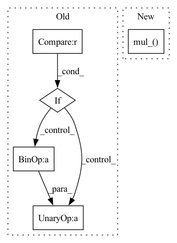

Pattern ID :30697
Before Change
n_gram = None
for i in range(0, n):
if i == (n - 1) :
last_sample = None
else:
last_sample = -(n - i - 1)
sample = permute(input[..., i:last_sample, :], shifts=n - i - 1)
if n_gram is None:
n_gram = sample
else:After Change
n_gram = permute(input[..., :-(n-1), :], shifts=n-1)
for i in range(1, n-1):
n_gram.mul_( permute(input[..., i:-(n-1 - i), :], shifts=n-1 - i))
n_gram.mul_(input[...,n-1:,:])
return multiset(n_gram)
In pattern: SUPERPATTERN
Frequency: 3
Non-data size: 5
Instances Fragment ID: 90523491
Project Name: hyperdimensional-computing/torchhd
Commit Name: ff34552916de3293f970a4a393ebd9efe8e5fa0f
Time: 2022-05-16
Author: linxinyuan@gmail.com
File Name: torchhd/functional.py
M Class Name: AnonimousClass
N Class Name: AnonimousClass
M Method Name: ngrams(2)
N Method Name: ngrams(2)
M Parent Class:
N Parent Class:
M File Name: torchhd/functional.py
N File Name: torchhd/functional.py
M Start Line: 488
M End Line: 499
N Start Line: 488
N End Line: 491
Before Change
self.running_var.fill_(1)
def forward(self, x):
if x.dim() != 4 :
raise ValueError("expected 4D input (got {}D input)"
.format(x.dim()))
if self.version == "S0":
if self.non_linear:
num = x * torch.sigmoid(self.v * x)
return num / group_std(x, eps = self.eps) * self.gamma + self.beta
else:
return x * self.gamma + self.beta
if self.version == "B0":
if self.training:
var = torch.var(x, dim = (0, 2, 3), unbiased = False, keepdim = True).reshape(1, x.size(1), 1, 1)
with torch.no_grad():
self.running_var.copy_(self.momentum * self.running_var + (1 - self.momentum) * var)
else:
var = self.running_var
After Change
if self.version == "B0":
if self.training:
var = torch.var(x, dim = (0, 2, 3), unbiased = False, keepdim = True)
self.running_var.mul_( self.momentum)
self.running_var.add_((1 - self.momentum) * var)
else:
var = self.running_var
Fragment ID: 90523510
Project Name: digantamisra98/evonorm
Commit Name: 2b8670c5ace4245b2ce8c234d59a26f6fba1b29a
Time: 2020-04-25
Author: mishradiganta91@gmail.com
File Name: evonorm2d.py
M Class Name: EvoNorm2D
N Class Name: EvoNorm2D
M Method Name: forward(2)
N Method Name: forward(2)
M Parent Class: nn.Module
N Parent Class: nn.Module
M File Name: evonorm2d.py
N File Name: evonorm2d.py
M Start Line: 38
M End Line: 52
N Start Line: 50
N End Line: 61
Before Change
runs with success, but needs further validation and possibly optimization for lower runtime impact.
if drop_prob == 0. or not training:
return x
_, _, height, width = x.shape
total_size = width * height
clipped_block_size = min(block_size, min(width, height))
// seed_drop_rate, the gamma parameter
seed_drop_rate = gamma_scale * drop_prob * total_size / clipped_block_size ** 2 / (
(width - block_size + 1) *
(height - block_size + 1))
// Forces the block to be inside the feature map.
w_i, h_i = torch.meshgrid(torch.arange(width).to(x.device), torch.arange(height).to(x.device))
valid_block = ((w_i >= clipped_block_size // 2) & (w_i < width - (clipped_block_size - 1) // 2)) & \
((h_i >= clipped_block_size // 2) & (h_i < height - (clipped_block_size - 1) // 2))
valid_block = torch.reshape(valid_block, (1, 1, height, width)).float()
uniform_noise = torch.rand_like(x, dtype=torch.float32)
block_mask = ((2 - seed_drop_rate - valid_block + uniform_noise) >= 1).float()
block_mask = -F.max_pool2d(
-block_mask,
kernel_size=clipped_block_size, // block_size, ???
stride=1,
padding=clipped_block_size // 2)
if drop_with_noise:
normal_noise = torch.randn_like(x)
x = x * block_mask + normal_noise * (1 - block_mask)
else:
normalize_scale = block_mask.numel() / (torch.sum(block_mask) + 1e-7)
x = x * block_mask * normalize_scale
return x
After Change
else:
normalize_scale = (block_mask.numel() / block_mask.to(dtype=torch.float32).sum().add(1e-7)).to(x.dtype)
if inplace:
x.mul_( block_mask * normalize_scale)
else:
x = x * block_mask * normalize_scale
return x
Fragment ID: 90523500
Project Name: feng-lab/pytorch-image-models
Commit Name: 1904ed8fecdb3f37818378421350315d2abf1224
Time: 2020-05-13
Author: rwightman@gmail.com
File Name: timm/models/layers/drop.py
M Class Name: AnonimousClass
N Class Name: AnonimousClass
M Method Name: drop_block_2d(7)
N Method Name: drop_block_2d(6)
M Parent Class:
N Parent Class:
M File Name: timm/models/layers/drop.py
N File Name: timm/models/layers/drop.py
M Start Line: 25
M End Line: 62
N Start Line: 26
N End Line: 69